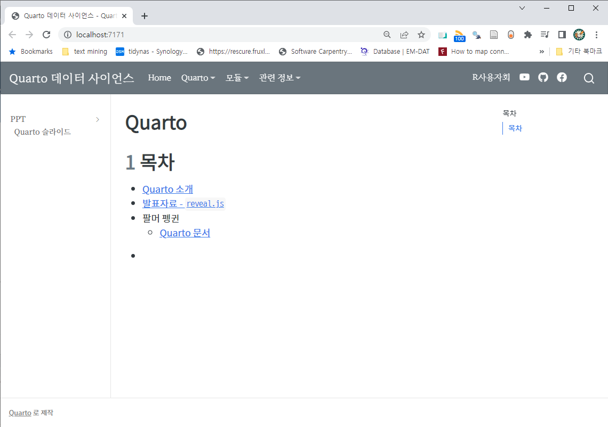

1 SASS 파일 위치 1
기존 외양 정보를 담은 .css 파일을 확장하여 .scss 파일에 담아둔다. 웹사이트 구조를 담고 있는 _quarto.yaml 파일에 외양 정보를 담고 있는 .scss 파일을 지정해둔다. 예를 들어 외양 정보가 담긴 quarto.scss 파일이 css/ 디렉토리 아래 존재한다면 다음과 같이 _quarto.yaml 파일에 반영한다.
...
format:
html:
theme:
- litera
- css/quarto.scss
toc: true
...2 SASS 파일
quarto.scss 파일에 글꼴과 색상 등 외양관련 정보를 담아 기록한다. 부츠트랩을 외양을 다루는데 많이 사용하기 때문에
bootstrap/scss/_variables.scss을 참조하여 해당 영역 색상과 글꼴을 자유로이 변경시킨다.
/*-- scss:defaults --*/
// Color system
// scss-docs-start gray-color-variables
$white: #fff !default;
$gray-100: #f8f9fa !default;
$gray-200: #e9ecef !default;
$gray-300: #dee2e6 !default;
$gray-400: #ced4da !default;
$gray-500: #adb5bd !default;
$gray-600: #6c757d !default;
$gray-700: #495057 !default;
$gray-800: #343a40 !default;
$gray-900: #212529 !default;
$black: #000 !default;
// 글꼴
@import url('https://fonts.googleapis.com/css2?family=Noto+Sans+KR');
@import url('https://fonts.googleapis.com/css2?family=Noto+Serif+KR');
@import url('https://fonts.googleapis.com/css2?family=Nanum+Myeongjo&display=swap');
@font-face {
font-family: 'MaruBuri-Regular';
src: url('https://cdn.jsdelivr.net/gh/projectnoonnu/noonfonts_20-10-21@1.0/MaruBuri-Regular.woff') format('woff');
font-weight: normal;
font-style: normal;
}
@font-face {
font-family: 'D2Coding';
src: url('https://cdn.jsdelivr.net/gh/projectnoonnu/noonfonts_three@1.0/D2Coding.woff') format('woff');
font-weight: normal;
font-style: normal;
}
// Typography
//
// Font, line-height, and color for body text, headings, and more.
// scss-docs-start font-variables
// stylelint-disable value-keyword-case
$font-family-sans-serif: "Noto Sans KR", 'Nanum Myeongjo', !default;
// $font-family-serif: 'MaruBuri-Regular', "Noto Serif KR", !default;
$font-family-monospace: 'D2Coding', "Courier New", monospace !default;
// scss-docs-start headings-variables
$headings-font-family: $font-family-sans-serif !default;
/*-- scss:rules --*/
.navbar-dark {
background-color:$gray-600;
color: #000000;
font-family: 'MaruBuri-Regular';
}
.sidebar-item {
margin-bottom: 0.2em;
font-family: 'Noto Serif KR';
}
h1, .h1, h2, .h2 {
margin-top: 2rem;
margin-bottom: 1rem;
font-family: 'Noto Sans KR';
}
p {
font-family: 'MaruBuri-Regular', serif;
}3 작업방법
개발하는 것이 웹사이트라서 quarto.cmd preview를 실행하여 로컬 컴퓨터에서 웹서버를 띄워 웹사이트를 보면서 작업하는 방식을 취힌다.
미리보기 모드 동작
$ quarto.cmd preview
Terminating existing preview server....DONE
Preparing to preview
Watching files for changes
Browse at http://localhost:7171/미리보기 결과
